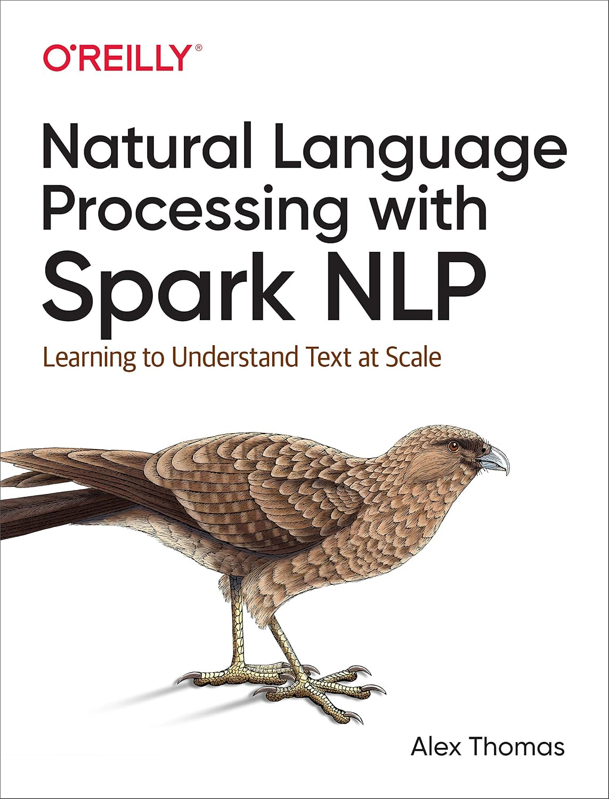

Week 8: Spark MLlib, Spark NLP
DSAN 6000: Big Data and Cloud Computing
Fall 2026
Class Sessions
Today’s Agenda: Demos! And More Demos!
Spark DataFrame
…Yet another type of DataFrame!
Pandas
- Everything in RAM
- All computations eagerly executed
data_df['price'].mean()Polars: Introduced lazy execution
- \(\leadsto\) separation of computation from data
- Optimized for multicore computation
ratio_expr = (
pl.col('work_hrs') / pl.col('sleep_hrs')
).alias('sleep_ratio')
data_pl.with_columns(ratio_expr).collect()PySpark
data_sdf = spark.createDataFrame([
[1, 2.0, 's1', date(2000, 1, 1), datetime(2000, 1, 1, 12, 0)],
[2, 3.0, 's2', date(2000, 3, 1), datetime(2000, 1, 3, 12, 0)],
], schema='a long, b double, c string, d date, e timestamp')
data_sdf- Optimized for distributed computation \(\leadsto\) requires an always-running process
- Wrapper around
RDD(Resilient Distributed Dataset):data_sdf.rdd.getNumPartitions()
In-Class Demo 1: Local Spark
(For development, can just pip install pyspark!)
First Things First: OpenJDK
- Spark 4: Recommended JDK version = 21
- (How would you know without me telling you? Truly idk)
sudo apt install openjdk-21-jdk-headless - Install this on the master node and on all worker nodes that you’d like to link together
- (Run
sudo apt updatefirst if on a new instance!)
- (Run
Getting + Using Spark
Click through the “Download Spark” link…
…To get the actual download URL 😵💫
Use
wget <url>in terminal to download.tar.gz:wget https://dlcdn.apache.org/spark/spark-4.2.0/spark-4.2.0-bin-hadoop3.tgzExtract using:
tar -xzvf spark-4.2.0-bin-hadoop3.tgz
In-Class Demo 2: Your First Spark Cluster!
Spark Cluster Checklist:
AWS Console → EC2 Console → Security group (launch-wizard-1):
Master node:
-
export PRIVATE_IP=$(hostname -I | awk '{print $1}')
Worker nodes (one at a time):
Check status via Spark UI: Master on localhost:8080 (VSCode port forwarding)
(New worker nodes should appear after each start-worker.sh)
Now Use It From a Jupyter Notebook
from pyspark.sql import SparkSession
spark = (
SparkSession
.builder
.appName('UNSC_Speeches')
.master('spark://<Private IP Here!>:7077')
.config('spark.jars.packages','org.apache.hadoop:hadoop-aws:3.5.0')
.getOrCreate()
)Check status of SparkSession via Spark Session UI: localhost:4040
- Master node UI:
localhost:8080(worker UI=localhost:8081) SparkSessionUI:localhost:4040- Confusion ↓, Understanding ↑ 🥳

In-Class Demo 3
Spark NLP
MLlib: pyspark as normal:
from pyspark.sql import SparkSession
spark = (
SparkSession
.builder
.appName('SF_Housing')
.getOrCreate()
)
type(spark)
# >>> pyspark.sql.session.SparkSession
from pyspark.ml.feature import VectorAssemblerSpark NLP: Custom SparkSession with sparknlp.start():
import sparknlp
spark = sparknlp.start()
type(spark)
# >>> pyspark.sql.session.SparkSession
from sparknlp.base import DocumentAssembler
In-Class Demo 4
References
Thomas, Alex. 2020. Natural Language Processing with Spark NLP: Learning to Understand Text at Scale. "O’Reilly Media, Inc."